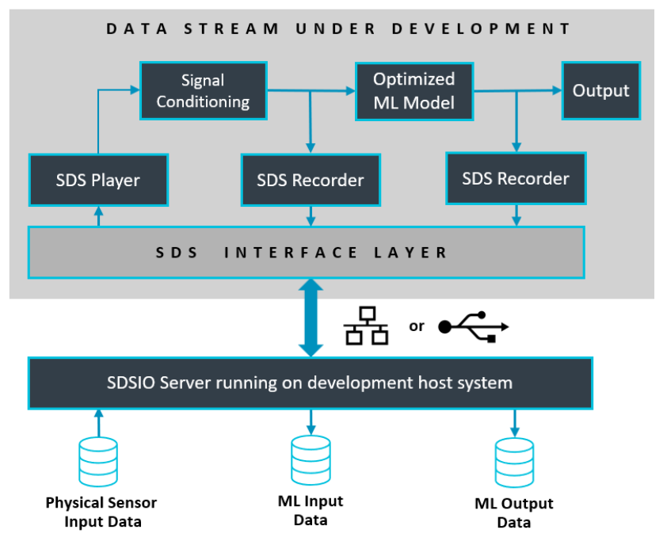

SDS Interface
The SDSIO components offer flexible recorder and playback interfaces. You may choose between these interface components that can be easily integrated into the target system:
- component: SDS:IO:Socket # Socket Interface (Ethernet or WiFi)
- component: SDS:IO:VCOM&MDK USB # USB Interface
- component: SDS:IO:Serial&CMSIS USART # USART Interface
- component: SDS:IO:File System&MDK FS # Memory card
- component: SDS:IO:File System&Semihosting # Simulation or Debugger
To simplify usage further, the following pre-configured SDS interface layers in csolution project format are available. These connect via various interfaces to the SDSIO server that for read/write access to SDS data files.
- Ethernet Interface using the MDK-Middleware Network components.
- USB Interface using the MDK-Middleware USB components.

The SDS interface layers can be further tailored for the application requirements. For example by removing the playback interface component when only recording is required.
component: SDS:Player&CMSIS-RTOS2 # remove this when not required
Layer: Network/SDS_Interface
The Network/SDS_Interface.clayer is configured for recording and playback via Ethernet interface. It is using the MDK-Middleware Network component.
Layer: USB/SDS_Interface
The USB/SDS_Interface.clayer is configured for recording and playback via Ethernet interface. It is using the MDK-Middleware Network component.